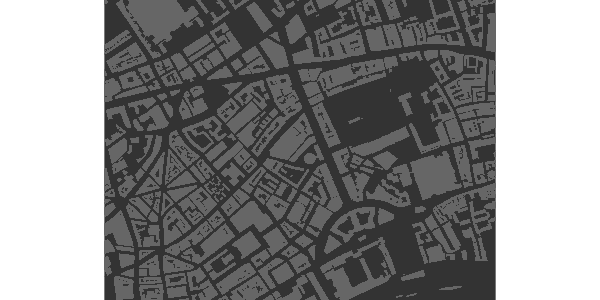
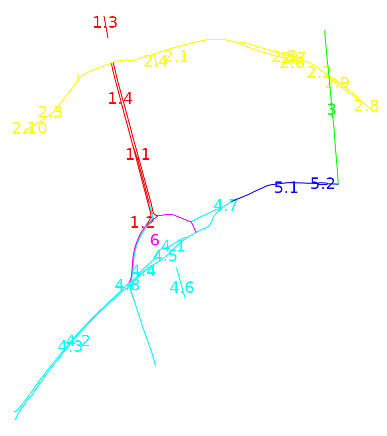
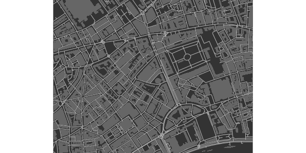
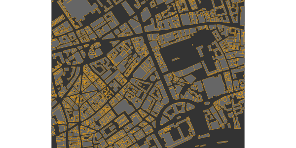
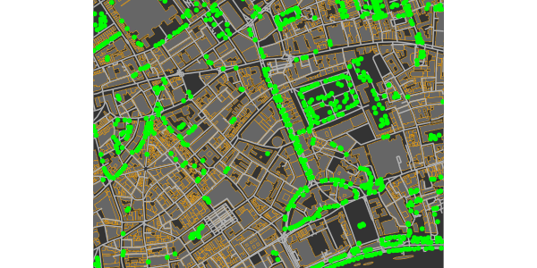
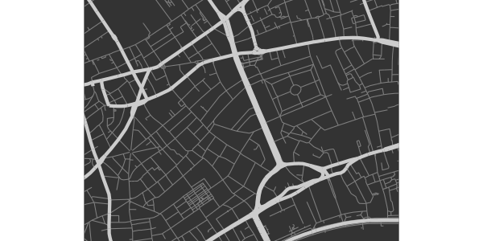
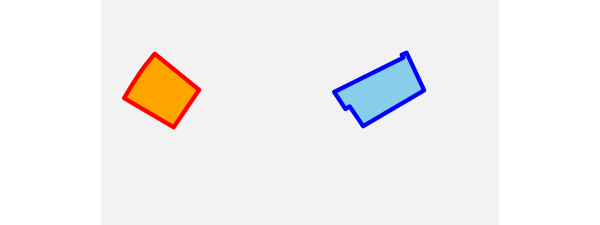
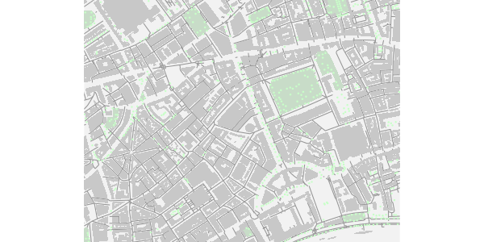
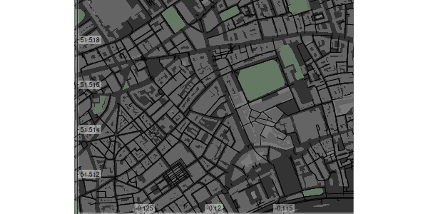
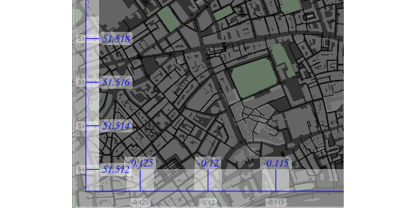

The R package osmplotr uses OpenStreetMap (OSM) data to produce highly customisable maps. Data are downloaded via the osmdata package, and different aspects of map data - such as roads, buildings, parks, or water bodies - are able to be visually customised. This vignette demonstrates both data downloading and the creation of simple maps. The subsequent vignette (‘data-maps’) demonstrates how osmplotr enables user-defined data to be visualised using OSM data. The maps in this vignette represent a small portion of central London, U.K.
1. Introduction
A map can be generated using the following simple steps:
- Specify the bounding box for the desired region
- Download the desired data—in this case, all building perimeters.
dat_B <- extract_osm_objects (key = "building", bbox = bbox)- Initiate an
osm_basemapwith desired background (bg) colour
map <- osm_basemap (bbox = bbox, bg = "gray20")- Add desired plotting objects in the desired colour.
map <- add_osm_objects (map, dat_B, col = "gray40")- Print the map
print_osm_map (map)
The function print_osm_map creates a graphics device that is scaled to the bounding box of the map. Note also that osmplotr maps contain no margins and fill the entire plot area, reflecting the general layout of most printed maps. Additional capabilities of osmplotr are described in the following sections, beginning with downloading and extraction of data.
2. Downloading Data
The package osmdata is used to download data from ‘OpenStreetMap’ using the ‘overpass’ API overpass API. Data may be returned in either ‘Simple Features’ (sf) or ‘R Spatial’ (sp) form. osmplotr has a convenience function, extract_osm_objects, to allow direct import, or the functions of osmdata can also be used directly.
Data of a particular type can be extracted by specifying the appropriate OSM key, as in the above example:
bbox <- get_bbox (c(-0.13, 51.51, -0.11, 51.52))
dat_B <- extract_osm_objects (key = "building", bbox = bbox)
dat_H <- extract_osm_objects (key = "highway", bbox = bbox)These objects are of appropriate Spatial classes:
## [1] "sf" "data.frame"## [1] "sf" "data.frame"## [1] "sfc_POLYGON" "sfc"## [1] "sfc_LINESTRING" "sfc"Spatial (sp) objects may be returned with,
dat_B <- extract_osm_objects (key = "building", bbox = bbox, sf = FALSE)otherwise sf is used as the default format. The Simple Features (sf) objects with polygons of London buildings and linestrings of highways respectively contain
## [1] 1767## [1] 1220… 1,759 building polygons and 1,133 highway lines. extract_osm_objects also accepts key-value pairs which are passed to the overpass API :
dat_T <- extract_osm_objects (key = "natural", value = "tree", bbox = bbox)Trees are located by single coordinates and are thus point objects:
## [1] "sfc_POINT" "sfc"## [1] 688
2.1 osmdata
The osmdata package provides a more powerful interface for downloading OSM data, and may be used directly with osmplotr. The osmplotr function extract_osm_objects is effectively just a convenience wrapper around omsdata functionality. The primary differences between the two are:
-
osmdatareturns all spatial data for a given query; that is, all points, lines, polygons, multilines, and multipolygons, whileosmplotrreturns a single specified geometric type. -
osmplotraccepts multiplekey-valuepairs in a single call toextract_osm_objects, which the equivalentosmdatafunction,add_feature, accepts only a singlekey-valuepair, with queries successively build through multiple calls toadd_feature.
These differences are illustrated in the following code which generates identical results in both cases (with namespaces explicitly given to aid clarity),
dat1 <- osmplotr::extract_osm_objects (key = "highway", value = "!primary",
bbox = bbox)
dat2 <- osmdata::opq (bbox = bbox) %>%
add_feature (key = "highway") %>%
add_feature (key = "highway", value = "!primary") %>%
osmdata_sf ()
dat2 <- dat2$osm_linesThe osmdata function opq() constructs an overpass query, with successive calls to add_feature extending the query until it is finally submitted to overpass by osmdata_sf() (or the sp version osmdata_sp()).
Note that add_feature() has to be called twice in this case, because a single call to add_feature (key = 'highway", value = "!primary") would request all features that are not primary highways. The initial query for key = "highway" ensures that only npn-primary highways are returned.
2.2 Negation
As demonstrated above, negation can be specified by pre-pending ! to the value argument so that, for example, all natural objects that are not trees can be extracted with
dat_NT <- extract_osm_objects (bbox = bbox, key = "natural", value = "!tree")## Cannot determine return type; maybe specify explicitly?The message is generated because of course a request for anything that is not a tree could be for any kind of spatial object. osmplotr makes several educated guesses in the absence of specified return types, but these can always be forced with the return_type parameter:
pts_NT <- extract_osm_objects (bbox = bbox, key = "natural", value = "!tree",
return_type = "points")london$dat_H contains all non-primary highways, and was extracted with the call demonstrated above, while london$dat_HP contains the corresponding set of exclusively primary highways. An osmplotr request for key = "highway" automatically returns line objects (although, again, other kinds of objects may be forced through specifying return_type).
2.3 Additional key-value pairs
Any number of key-value pairs may be passed to extract_osm_objects. For example, a named building can be extracted with
bbox <- get_bbox (c(-0.13, 51.50, -0.11, 51.52))
extra_pairs <- c ("name", "Royal.Festival.Hall")
dat <- extract_osm_objects (key = "building", extra_pairs = extra_pairs,
bbox = bbox)These data are stored in london$dat_RFH. Note that periods or dots are used for white space, and in fact symbolise (in grep terms) any character whatsoever. The polygon of a building at a particular street address can be extracted with
extra_pairs <- list (c ("addr:street", "Stamford.St"),
c ("addr:housenumber", "150"))
dat <- extract_osm_objects (key = "building", extra_pairs = extra_pairs,
bbox = bbox)These data are stored as london$dat_ST. Note that addresses generally require combining both addr:street with addr:housenumber.
2.4 Downloading with osm_structures and make_osm_map
The functions osm_structures and make_osm_map aid both downloading multiple OSM data types and plotting (with the latter described below). osm_structures returns a data.frame of OSM structure types, associated key-value pairs, unique suffices which may be appended to data structures for storage purposes, and suggested colours. Passing this list to make_osm_map will return a list of the requested OSM data items, named through combining the dat_prefix specified in make_osm_map and the suffices specified in osm_structures.
## structure key value suffix cols
## 1 building building BU #646464FF
## 2 amenity amenity A #787878FF
## 3 waterway waterway W #646478FF
## 4 grass landuse grass G #64A064FF
## 5 natural natural N #647864FF
## 6 park leisure park P #647864FF
## 7 highway highway H #000000FF
## 8 boundary boundary BO #C8C8C8FF
## 9 tree natural tree T #64A064FF
## 10 background gray20Many structures are identified by keys only, in which cases the values are empty strings.
osm_structures()$value [1:4]## [1] "" "" "" "grass"The last row of osm_structures exists only to define the background colour of the map, as explained below (4.3 Automating map production).
The suffices include as many letters as are necessary to represent all unique structure names. make_osm_map returns a list of two components:
-
osm_datacontaining the data objects passed in theosm_structuresargument. Any existingosm_datamay also be submitted tomake_osm_map, in which case any objects not present in the submitted data will be appended to the returned version. Ifosm_datais not submitted, all objects inosm_structureswill be downloaded and returned. -
mapcontaining theggplot2map objects with layers overlaid according to the sequence and colour schemes specified inosm_structures
The data specified in osm_structures can then be downloaded simply by calling:
dat <- make_osm_map (structures = osm_structures (), bbox = bbox)## [1] "osm_data" "map"## $osm_data
## [1] "list"
##
## $map
## [1] "gg" "ggplot"## [1] "dat_BU" "dat_A" "dat_W" "dat_G" "dat_N" "dat_P" "dat_H" "dat_BO"
## [9] "dat_T"The requested data are contained in dat$osm_data. A list of desired structures can also be passed to this function, for example,
osm_structures (structures = c("building", "highway"))## structure key value suffix cols
## 1 building building B #646464FF
## 2 highway highway H #000000FF
## 3 background gray20Passing this to make_osm_map will download only these two structures. Finally, note that the example of,
osm_structures (structures = "grass")## structure key value suffix cols
## 1 grass landuse grass G #64A064FF
## 2 background gray20demonstrates that osm_structures converts a number of common keys to OSM-appropriate key-value pairs.
2.4.1 The london data of osmplotr
To illustrate the use of osm_structures to download data, this section reproduces the code that was used to generate the london data object which forms part of the osmplotr package.
structures <- c ("highway", "highway", "building", "building", "building",
"amenity", "park", "natural", "tree")
structs <- osm_structures (structures = structures, col_scheme = "dark")
structs$value [1] <- "!primary"
structs$value [2] <- "primary"
structs$suffix [2] <- "HP"
structs$value [3] <- "!residential"
structs$value [4] <- "residential"
structs$value [5] <- "commercial"
structs$suffix [3] <- "BNR"
structs$suffix [4] <- "BR"
structs$suffix [5] <- "BC"Suffices are generated automatically from structure names only, not values, and the suffices for negated forms must therefore be specified manually. The london data can then be downloaded by simply calling make_osm_map:
london <- make_osm_map (structures = structs, bbox = bbox)$osm_dataThe requested data are contained in the $osm_data list item. make_osm_map also returns a $map item which is described below (see 4.3 Automating map production).
3. Downloading connected highways
The visualisation functions described in the second osmplotr vignette (Data maps) enable particular regions of maps to be highlighted. While it may often be desirable to highlight regions according to a user’s own data, osmplotr also enables regions to be defined by providing a list of the names of encircling highways. The function which achieves this is connect_highways, which returns a sequential matrix of coordinates from those segments of the named highways which connected continuously and sequentially to form a single enclosed space. An example is,
highways <- c ("Monmouth.St", "Short.?s.Gardens", "Endell.St", "Long.Acre",
"Upper.Saint.Martin")
highways1 <- connect_highways (highways = highways, bbox = bbox)Note the use of the regex character ? which declares that the previous character is optional. This matches both “Shorts Gardens” and “Short’s Gardens”, both of which appear in OSM data.
## [1] "list"## [1] 5## lon lat
## 1678452807 -0.1270287 51.51370
## 2265298898 -0.1270523 51.51362
## 438170687 -0.1270865 51.51347
## 3192197694 -0.1270902 51.51345
## 9513062 -0.1271692 51.51288The extraction of bounding polygons from named highways is not fail-safe, and may generate various warning messages. To understand the kinds of conditions under which it may not work, it is useful to examine connect_highways in more detail.
3.1 connect_highways in detail
connect_highways takes a list of OpenStreetMap highways and sequentially connects closest nodes of adjacent highways until the set of named highways connects to form a cycle. Cases where no circular connection is possible generate an error message. The routine proceeds through the three stages of,
Adding intersection nodes to junctions of ways where these don’t already exist
Filling a connectivity matrix between the listed highways and extracting the longest cycle connecting all of them
Inserting extra connections between highways until the length of the longest cycle is equal to
length (highways).
This procedure can not be guaranteed fail-safe owing both to the inherently unpredictable nature of OpenStreetMap, as well as to the unknown relationships between named highways. To enable problematic cases to be examined and hopefully resolved, connect_highways has a plot option:
bbox_big <- get_bbox (c(-0.15, 51.5, -0.10, 51.52))
highways <- c ("Kingsway", "Holborn", "Farringdon.St", "Strand",
"Fleet.St", "Aldwych")
highway_list <- connect_highways (highways = highways, bbox = bbox_big,
plot = TRUE)## Warning: Cycle unable to be extended through all ways
The plot depicts each highway in a different colour, along with numbers at start and end points of each segment. This plot reveals in this case that highway#6 (“Aldwych”) is actually nested within two components of highway#4 (“Strand”). connect_highways searches for the shortest path connecting all named highways, and since “Strand” connects to both highways#1 and #5, the shortest path excludes #6. This exclusion of one of the named components generates the warning message.
These connected polygons returned from connect_highways can then be used to highlight the enclosed regions within maps, as demonstrated in the second vignette, ‘Data Maps’.
4. Producing maps
Maps will generally contain multiple kinds of OSM data, for example,
dat_B <- extract_osm_objects (key = "building", bbox = bbox)
dat_H <- extract_osm_objects (key = "highway", bbox = bbox)
dat_T <- extract_osm_objects (key = "natural", value = "tree", bbox = bbox)As illustrated above, plotting maps requires first making a basemap with a specified background colour. Portions of maps can also be plotted by creating a basemap with a smaller bounding box.
bbox_small <- get_bbox (c(-0.13, 51.51, -0.11, 51.52))
map <- osm_basemap (bbox = bbox_small, bg = "gray20")
map <- add_osm_objects (map, dat_H, col = "gray70")
map <- add_osm_objects (map, dat_B, col = "gray40")map is then a ggplot2 which may be viewed simply by passing it to print_osm_map:
print_osm_map (map)
Other graphical parameters can also be passed to add_osm_objects, such as border colours or line widths and types. For example,
map <- osm_basemap (bbox = bbox_small, bg = "gray20")
map <- add_osm_objects (map, dat_B, col = "gray40", border = "orange",
size = 0.2)
print_osm_map (map)
The size argument is passed to the corresponding ggplot2 routine for plotting polygons, lines, or points, and respectively determines widths of lines (for polygon outlines and for lines), and sizes of points. The col argument determines the fill colour of polygons, or the colour of lines or points.
map <- add_osm_objects (map, dat_H, col = "gray70", size = 0.7)
map <- add_osm_objects (map, dat_T, col = "green", size = 2, shape = 1)
print_osm_map (map)
Note also that the shape parameter determines the point shape, for details of which see ?ggplot2::shape. Also note that plot order affects the final outcome, because components are sequentially overlaid and thus the same map components plotted in a different order will generally produce a different result.
4.1 Saving Maps
The function print_osm_map() can be used to print either to on-screen graphical devices or to graphics files (see, for example, ?png for a list of possible graphics devices). Sizes and resolutions of devices may be specified with the appropriate parameters. Device dimensions are scaled by default to the proportions of the bounding box (although this can be over-ridden).
A screen-based device simply requires
print_osm_map (map)while examples of writing higher resolution versions to files include:
print_osm_map (map, filename = "map.png", width = 10,
units = "in", dpi = map_dpi)
print_osm_map (map, filename = "map.eps", width = 1000,
units = "px", dpi = map_dpi)
print_osm_map (map, filename = "map", device = "jpeg", width = 10, units = "cm")4.2 Plotting different OSM Structures
The ability demonstrated above to use negation in extract-osm-objects allows different kinds of the same object to be visually contrasted, for example primary and non-primary highways:
dat_HP <- extract_osm_objects (key = "highway", value = "primary", bbox = bbox)
dat_H <- extract_osm_objects (key = "highway", value = "!primary", bbox = bbox)
map <- osm_basemap (bbox = bbox_small, bg = "gray20")
map <- add_osm_objects (map, dat_H, col = "gray50")
map <- add_osm_objects (map, dat_HP, col = "gray80", size = 2)
print_osm_map (map)
The additional key-value pairs demonstrated above (for Royal Festival Hall, dat_RFH and 150 Stamford Street, dat_ST) also demonstrated above allow for highly customised maps in which distinct objects are plotting with different colour schemes.
bbox_small2 <- get_bbox (c (-0.118, 51.504, -0.110, 51.507))
map <- osm_basemap (bbox = bbox_small2, bg = "gray95")
map <- add_osm_objects (map, dat_H, col = "gray80")
map <- add_osm_objects (map, dat_HP, col = "gray20", size = 2)
map <- add_osm_objects (map, dat_RFH, col = "orange", border = "red", size = 2)
map <- add_osm_objects (map, dat_ST, col = "skyblue", border = "blue", size = 2)
print_osm_map (map)
4.3 Filling within boundary lines
Different portions of a map may sometimes be delineated by lines, for example with coastlines which are always represented in OpenStreetMap as lines. Plotting the water or land either side of a coastline in a single block of colour requires the regions to be polygons, not lines. osmplotr has a function osm_line2poly() which converts boundary lines extending beyond a given bounding box into polygons encircling the perimeter of the bounding box. An example is given in ?osm_line2poly, using both the osmdata package to obtain the bounding box of a named region, and the magrittr pipe operator.
library (osmdata)
bb <- osmdata::getbb ("melbourne, australia")
coast <- extract_osm_objects (bbox = bb, key = "natural", value = "coastline",
return_type = "line")
coast <- osm_line2poly (coast, bbox = bb)
map <- osm_basemap (bbox = bb) %>%
add_osm_objects (coast [[1]], col = "lightsteelblue") %>%
print_osm_map ()The osm_line2poly() function returns a list of two sf polygons. For coastline, one of these will correspond to water, one to land. In the preceding example, the first polygon is the ocean, which is coloured in "lightsteelblue". Users must determine for themselves which polygon is to be plotted in which colour. Note that osm_line2poly() only accepts sf-formatted data, and not sp.
4.4 Automating map production
As indicated above (2.4 Downloading with osm_structures and make_osm_map), the production of maps overlaying various type of OSM objects is facilitated with make_osm_map. The structure of a map is defined by osm_structures as described above.
Producing a map with customised data is as simple as,
structs <- c ("highway", "building", "park", "tree")
structures <- osm_structures (structures = structs, col_scheme = "light")
dat <- make_osm_map (structures = structures, bbox = bbox_small)
print_osm_map (dat$map)
Calling make_osm_map() downloads the requested structures within the given bbox and returns a list of two components, the first of which contains the downloaded data:
## [1] "osm_data" "map"## [1] "dat_B" "dat_H" "dat_P" "dat_A" "dat_P" "dat_T"Pre-downloaded data may also be passed to make_osm_map()
dat <- make_osm_map (structures = structures, osm_data = dat$osm_data,
bbox = bbox)
print_osm_map (dat$map)
Note that omitting the bounding box argument (bbox) produces a map with a bounding box is extracted as the largest box spanning all objects in osm_data. This may be considerably larger than the desired boundaries, particularly because highways are returned by overpass in their entirety, and will generally extend well beyond the specified bounding box.
Finally, objects in maps are overlaid on the plot according to the order of rows in osm_structures, with the single exception that background is plotted first. This order can be readily changed or restricted simply by submitting structures in a desired order.
structs <- c ("amenity", "building", "highway", "park")
osm_structures (structs, col_scheme = "light")## structure key value suffix cols
## 1 amenity amenity A #DCDCDCFF
## 2 building building B #C8C8C8FF
## 3 highway highway H #969696FF
## 4 park leisure park P #C8DCC8FF
## 5 background gray954.5 Axes
Axes may be added to maps using the add_axes function. In contrast to many R packages for producing maps, maps in osmplotr fill the entire plotting space, and axes are added internal to this space. The separate function for adding axes allows them to be overlaid on top of all previous layers.
Axes added to a dark version of the previous map look like this:
structures <- osm_structures (structures = structs, col_scheme = "dark")
dat <- make_osm_map (structures = structures, osm_data = dat$osm_dat,
bbox = bbox_small)
map <- add_axes (dat$map, colour = "black")Note that, as described above, make_osm_map returns a list of two items: (i) potentially modified data (in $osm_data) and (ii) the map object (in $map). All other add_ functions take a map object as one argument and return the single value of the modified map object.
print_osm_map (map)
This map reveals that the axes and labels are printed above semi-transparent background rectangles, with transparency controlled by the alpha parameter. Axes are always plotted on the left and lower side, but positions can be adjusted with the pos parameter which specifies the positions of axes and labels relative to entire plot device
map <- add_axes (map, colour = "blue", pos = c(0.1, 0.2),
fontsize = 5, fontface = 3, fontfamily = "Times")
print_osm_map (map)
The second call to add_axes overlaid additional axes on a map that already had axes from the previous call. This call also demonstrates how sizes and other font characteristics of text labels can be specified.
Finally, the current version of osmplotr does not allow text labels of axes to be rotated. (This is because the semi-transparent underlays are generated with ggplot2::geom_label which currently prevents rotation.)
Click on the following link to proceed to the second osmplotr vignette: Data maps